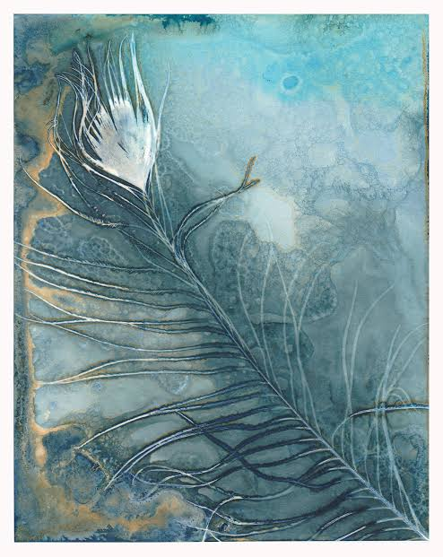

YVETTEGe


+86 +44 +1 +852
Design Research · Product Strategy · AI Prototyping
Making complex social and technical systems readable enough to act on.
Harvard GSD MDes candidate with social science training, design research practice, and full-stack prototyping skills for AI-fluent products, civic systems, learning tools, and organizational change.
Social scientist by training, design practice by instinct. Putting emerging technology to work on the social change it’s capable of.
■ I follow poetry like a current, then build the plumbing so it has somewhere to go.Selected Projects
[FROM 2023-2026]
METHODOLOGY
Hold complexity long enough for negotiation to become possible.
Between private experience and public structure runs a seam, one that was designed, and is actively maintained. I design and build tools that make it legible, contestable, and deliberately crossable.
001ManifestoTurn humanistic insights from a predicament into a method.
After three years tracing habitus, my thesis landed on cleft habitus: the condition of being caught between two mutually untranslatable worlds, forced to hold two logics of action at once. It is structural, produced by capital, institutions, language, and access to information, then internalized as the pattern by which we react.
I refuse to romanticize this position. Bilingual advantage and cross-cultural vision give me not an advantage but constant friction, and friction is a force. I convert that dislocation into method rather than curing it.
002What I Care AboutProblems are never isolated. They are tangled causal chains under one structure, so the question is always where to pull.
Across contexts, I care about how occlusion becomes a problem, and how it becomes an entry point.
I believe restricted information flow is what constrains the thinking that could produce change. Information silos make a system’s complexity available to only some. I can’t erase the vast inequalities of institution, information, and resource, so I design interfaces that at least make them visible, contestable, and acknowledgeable.
003RevealMake hidden structure visible.
Surface the institutional grammar, decompose a seemingly natural outcome into deliberate moves, and hold any settlement accountable before and after it occurs.
004MediateGet opposing sides to the same table.
The represented are never silent; their speech simply isn’t on the channel that gets heard. I build the channel, the surface, and the shared object.
005TranslateTurn discussion into something you can act on.
I wrap evidence of how power relations and capital flows operate into formats different actors can read, question, and use.
Hover a move to read how it behaves.
- Permission to say I don’t know.
- Permission to show messy tooling beside polished artifacts.
- Permission to hold a position, as long as it is acknowledged.
- Permission to make something discussable before calling it solved.
2021-2024
Academic Writing
Social science is what keeps me alert: to the world, to the structures inside it, to the problems those structures produce.
About
I’m currently a Master in Design Studies candidate at Harvard’s Graduate School of Design, in the Publics Domain track, after a First Class Honours Bachelor degree at UCL.
Besides that, I am

I go to 9am with cinnamon roll amd oat matcha.
I love my impossible impulses and I love to being audacity. I act to turn curiosity into stamina , and I can hold that for a long time.
I feel a lot, and I notice myself feeling it. I am still learning what that sensitivity is for, what it can lift. The struggle built both halves, the one that senses and the one that reasons.
I like seesaws. I go all in, but what thrills me is the search for the balance point.
I am competitive, and I am in full wing when I see the meanings.
I love a story that refuses what it was told to want, and writing that finds one clever way in and opens a structural unfairness with it.
I want deep connection and I work for it.
Every skill I have, I needed first.
I chase the problem, not the toolkit.
I learned social science, theory and method, to take a structure apart and see why it holds together the way it does. I learned design, fabrication, visualization, methodology, to build something that could act on what I found. I learned AI and infrastructure because the problem in front of me needed it. None of it was the goal. The problem was.
Drop me into a problem outside my training, and I will go acquire whatever it takes to solve it: a research method, a fabrication process, an unfamiliar piece of software, a new part of the AI stack. I do not wait until I am already qualified to start.
{kind=link}